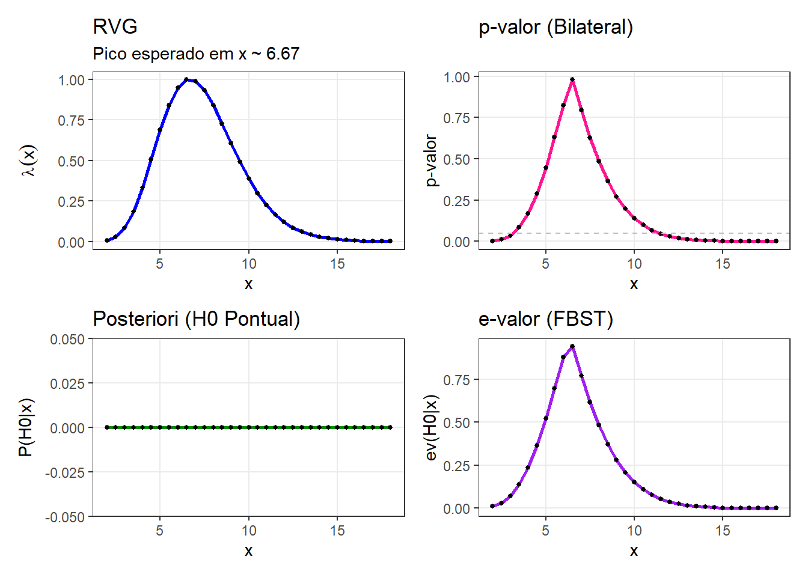
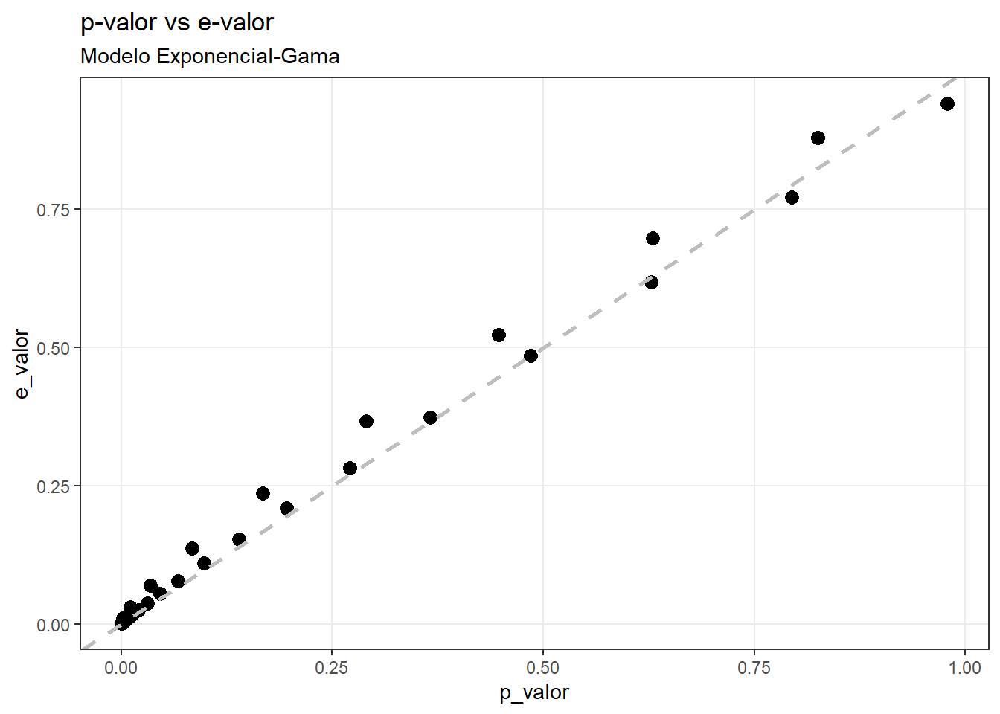

x_seq <- seq(from = 2, to = 18, by = 0.5)Modelo Exponencial-Gama
Introdução
Queremos analisar o comportamento de diferentes estatísticas de teste sobre o tempo de vida de um componente. Para isso, usaremos uma distribuição Exponencial, com parâmetro \(\lambda\), onde buscaremos testar hipóteses sobre esse parâmetro.
Definindo o modelo
Seja \(X_1, \dots, X_n\) v.a.c.i.i.d. tal que \(X_i|\lambda \sim \text{Exp}(\lambda)\). A função densidade é dada por \(f(x) = \lambda e^{-\lambda x}\). Vamos fixar o tamanho da amostra em \(n=10\).
Nesse caso, a estatística suficiente é a soma dos tempos observados: \(T(\mathbf{x}) = \sum_{i=1}^{10} x_i\). Temos que soma de \(n\) Exponenciais(\(\lambda\)) segue uma distribuição Gama:
\[ T(\mathbf{x}) \sim (n, \lambda) \]
Suponha que, a priori para o \(\lambda\) será Gama, também fixaremos os parâmetros em \(alpha=2\) e \(\beta =1\).
Consequentemente, a distribuição a posteriori para um dado \(x\) será:
\[ \lambda | \mathbf{x} \sim \text{Gama}(\alpha_{post} = 2 + n, \, \beta_{post} = 1 + x) \]
Teste de Hipótese
Deseja-se testar
\[ H_0: \lambda = 1.5 \quad \text{vs} \quad H_1: \lambda \neq 1.5 \]
Como \(H_0\) diz que \(\lambda=1.5\), o valor esperado da nossa estatística suficiente é \(E[T] = n / \lambda = 10 / 1.5 \approx 6.67\).
Vamos estudar o comportamento das estatísticas de tese para uma sequência de valores \(x\) (soma), em torno dessa média esperada (variando de 2 a 18), \(x = \sum_{i=1}^{10} \in \{2, \cdots, 18 \}\).
De maneira computacional:
Para cada um desses valores possíveis de \(x\), vamos calcular (e depois comparar) quatro medidas de estatística de teste:
1. RVG (Razão de Verossimilhança Generalizada) - \(\lambda(x)\): que é baseada na razão entre o supremo da verossimilhança sob \(H_0\) e sob todo o espaço paramétrico.
\[ \lambda (x) = \frac{\displaystyle \sup_{\theta \in \Theta_0} f(x|\theta)}{\displaystyle \sup_{\theta \in \Theta} f(x|\theta)} \]
2. p-value: é a probabilidade, sob \(H_0\), de obter uma estatística de teste tão ou mais extrema que a observada.
\[ \sup_{\theta \in \Theta_0} P(X: \lambda(\mathbf{X} \leq \lambda(x)| \theta) \]
3. Probabilidade a Posteriori (\(P(\theta \in \Theta_0|\mathbf{x})\)): A probabilidade direta da hipótese nula ser verdadeira dado os dados.
4. e-value:
\[ Ev(\Theta_0 | x) = 1 - P(\theta \in T_x | x) \]
Com
\[ T_x = \{ \theta : f(\theta | \mathbf{x} \geq \sup_{\theta \in \Theta_0} f(\theta | x) \} \]
Ao final, depois de mostrar a parte computacional (como calcular cada valor no R), mostraremos a evolução dessas medidas graficamente, ou seja, como cada abordagem reage a variação da nossa estatística suficiente,
Definindo parâmetros
n <- 10
lambda_0 <- 1.5
val_esperado <- n / lambda_0
x_seq <- seq(from = 2, to = 18, by = 0.5)
# Priori Gama(2, 1)
alpha_prior <- 2
beta_prior <- 1RVG
Para calcular a RVG usamos a Estimativa de Máxima Verossimilhança (EMV), que é dada por \(\hat{\lambda} = x/n\).
A razão de verossimilhança é calculada por:
\[ \lambda (x) = \frac{\displaystyle \sup_{\theta \in \Theta_0} f(x|\theta)}{\displaystyle \sup_{\theta \in \Theta} f(x|\theta)} \]
Calculando:
\[ \lambda(x) = \frac{V(\lambda_0)}{V(\hat{\lambda})} = \frac{\lambda_0^n e^{-\lambda_0 T}}{(\frac{n}{T})^n e^{-\frac{n}{T} T}} = \frac{\lambda_0^n e^{-\lambda_0 T}}{(\frac{n}{T})^n e^{-n}} \]
Computacionalmente:
calc_RVG_exp <- function(t, n, lambda0) {
# EMV sob H1
lambda_hat <- n / t
# log-V H0
ll_H0 <- n * log(lambda0) - lambda0 * t
# log-V H1 (Máxima)
ll_H1 <- n * log(lambda_hat) - lambda_hat * t
return(exp(ll_H0 - ll_H1))}p-valor
Se nossa estatística suficiente estiver próxima de 6,67 o p-valor será muito alto, já que a soma observada é a mesma da hipótese nula. Já para valores baixos ou altos o p-valor cairá.
Computacionalmente
calcular_pvalor <- function(t_obs, n, lambda_0) {
p_inf <- pgamma(t_obs, shape = n, rate = lambda_0)
p_sup <- 1 - pgamma(t_obs, shape = n, rate = lambda_0)
p_val <- 2 * min(p_inf, p_sup)
return(min(p_val, 1.0))}Probabilidade a posteriori
Como nosso \(H_0\) é exatamente igual a 15, a probabilidade de uma Pareto ser exatamente 15 é 0 (porque temos uma v.a contínua).
post_pontual <- function() {
return(0)}e-valor
Queremos calcular:
\[ \text{e-valor} = 1 - P(\theta \in T(x) | x) \]
calcular_evalor <- function(x_obs, n, lambda_0, alpha_pri, beta_pri) {
dens_h0 <- dgamma(lambda_0, shape = alpha_post, rate = beta_post)
moda <- (alpha_post - 1) / beta_post
if (abs(lambda_0 - moda) < 1e-6) {
return(1.0)}
f_dif <- function(lambda) {
dgamma(lambda, shape = alpha_post, rate = beta_post) - dens_h0}
prob_conjunto_tangente <- 0
if (lambda_0 < moda) {
limite_sup <- try(uniroot(f_dif, interval = c(moda, moda + 20))$root, silent = TRUE)
if(!is.numeric(limite_sup)) limite_sup <- Inf
prob_conjunto_tangente <- pgamma(limite_sup, alpha_post, beta_post) -
pgamma(lambda_0, alpha_post, beta_post)}
else {
limite_inf <- try(uniroot(f_dif, interval = c(1e-10, moda))$root, silent = TRUE)
if(!is.numeric(limite_inf)) limite_inf <- 0
prob_conjunto_tangente <- pgamma(lambda_0, alpha_post, beta_post) -
pgamma(limite_inf, alpha_post, beta_post)}
e_valor <- 1 - prob_conjunto_tangente
return(e_valor)}Gráficos

Conseguimos ver que o RVG, o p-valor e o e-valor são parecidos, neles o pico ocorre exatamente em \(x \approx 6.67\), onde os dados são mais compatíveis com a hipótese nula.

Os pontos seguem a linha \(x=y\), ou seja, nesse caso, as duas métricas dão resultados muito próximos.